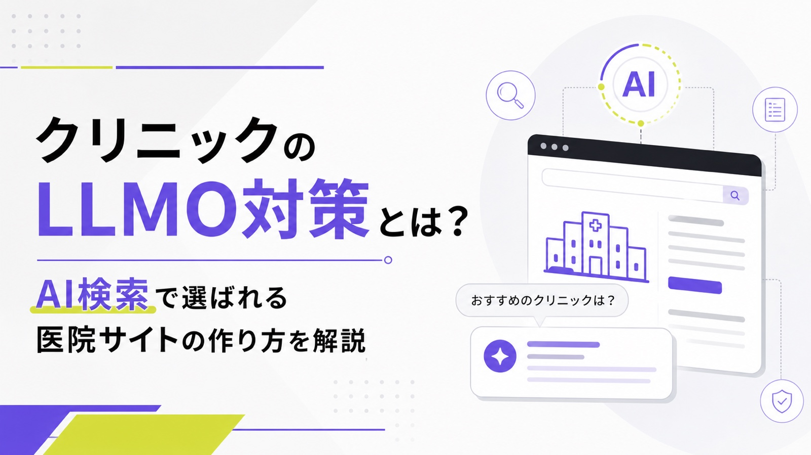
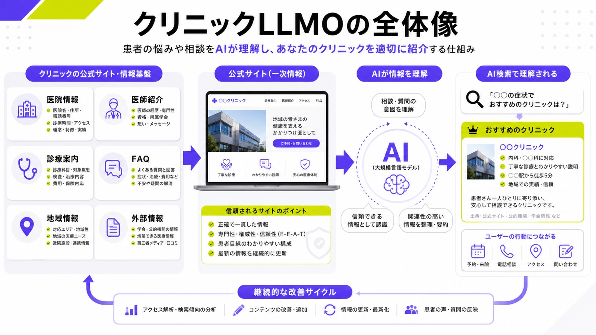
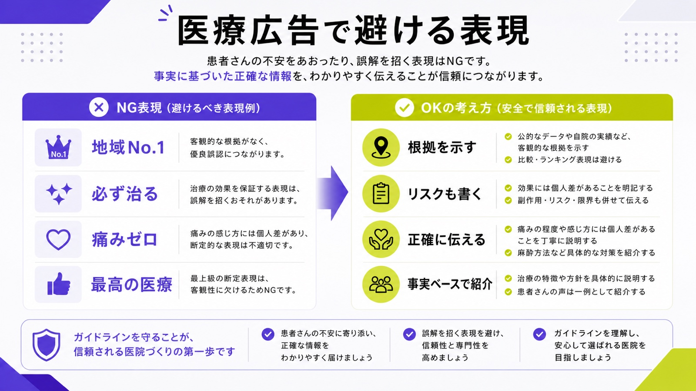
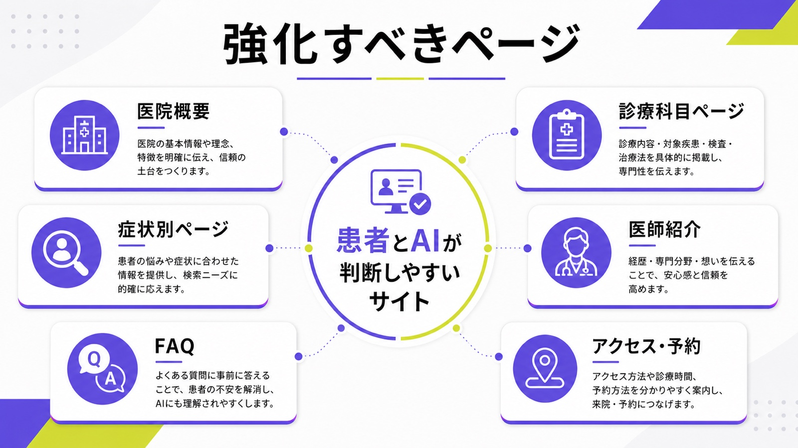
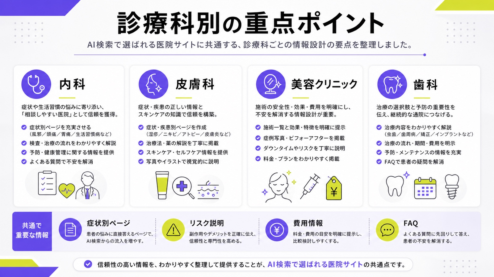
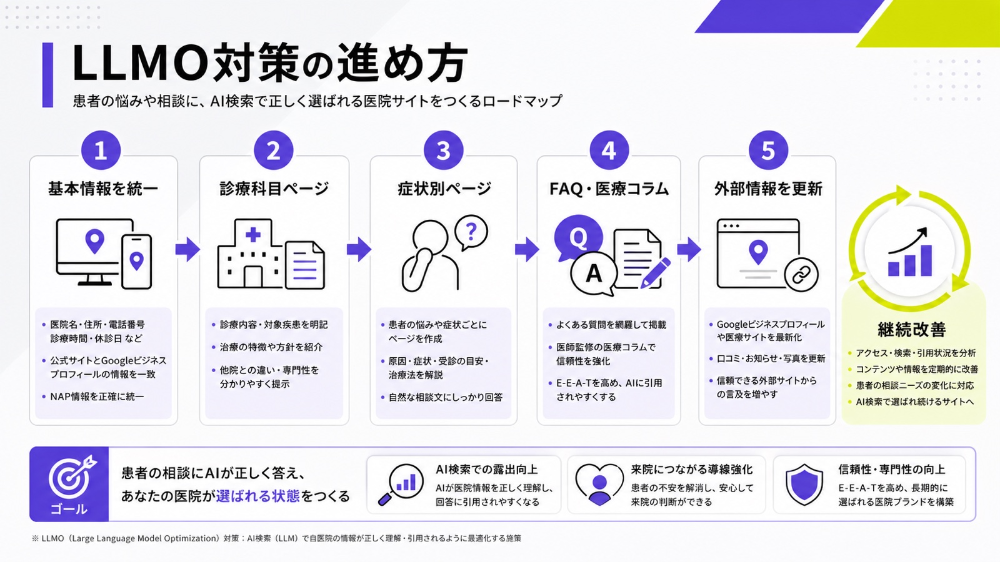

クリニックのLLMO対策とは？AI検索で選ばれる医院サイトの作り方を解説

ChatGPTやGoogle AI Overviewsなどの普及により、患者の情報収集は従来の検索エンジンだけにとどまらなくなっています。「近くで土曜診療している皮膚科はどこか」「この症状は何科に相談すべきか」「〇〇市で子どもを診てもらえるクリニックはどこか」といった質問に対して、AIが複数の情報源をもとに回答を生成する場面が増えています。
そのため、クリニックの集患では、検索結果で上位表示を狙うSEOだけでなく、AIに自院の情報を正しく理解され、回答内で候補として扱われるためのLLMO対策も重要になります。
一方で、クリニックの情報発信では、医療広告ガイドラインへの配慮が欠かせません。AIに引用されたいからといって、誇張表現や根拠の弱い訴求を増やすのは危険です。本記事では、クリニックがLLMO対策に取り組むべき理由、具体的な対策、診療科別のポイント、避けるべき失敗をわかりやすく解説します。
目次

クリニックのLLMO対策とは
クリニックのLLMO対策とは、ChatGPT、Gemini、Perplexity、Google AI OverviewsなどのAI検索・生成AIに、自院の情報を正しく理解してもらうための情報設計です。
従来のSEOでは、Google検索で上位表示され、公式サイトへアクセスしてもらうことが主な目的でした。一方、LLMO対策では、AIが患者の質問に回答するときに、自院の名前、診療内容、医師情報、所在地、診療時間、予約方法などを正確に認識できる状態を作ることが重要になります。
たとえば、患者が「梅田でニキビ治療に対応している皮膚科は？」「大阪市で生活習慣病の相談ができる内科は？」とAIに質問した場合、AIはWeb上の情報をもとに候補を判断します。このとき、公式サイトの情報が薄い、診療内容が分かりにくい、医師の専門性が伝わらない、Googleビジネスプロフィールと公式サイトの情報がズレていると、AIに正しく理解されにくくなります。
Googleは、AI検索向けの考え方について、従来のSEOの基本が引き続き重要であるとしています。つまり、クリニックのLLMO対策でも、小手先のAI対策より、患者にとって役立つ情報を正確に掲載し、検索エンジンが理解しやすいサイト構造を整えることが基本です。
「別途特別な最適化を行う必要もありません。」
つまり、クリニックのLLMO対策は、単にAI向けの特殊なテクニックを入れることではありません。患者にとって分かりやすく、AIにとっても読み取りやすい公式サイトを作ることが基本です。

SEO・MEO・LLMOの違い
クリニックのWeb集患では、SEO、MEO、LLMOを分けて考えると理解しやすくなります。
| 対策 | 主な目的 | 対象になる場所 | 重要な情報 |
|---|---|---|---|
| SEO | 検索結果で上位表示を狙う | Google検索、Yahoo!検索など | 診療ページ、症状別ページ、医療コラム |
| MEO | Googleマップ上で見つけてもらう | Googleマップ、Googleビジネスプロフィール | 住所、診療時間、口コミ、写真、予約リンク |
| LLMO | AI回答内で理解・引用される状態を作る | ChatGPT、Google AI Overviews、Gemini、Perplexityなど | 医院情報、医師情報、診療内容、FAQ、地域情報 |
SEOは「検索結果で見つけてもらう対策」、MEOは「地図検索で選ばれる対策」、LLMOは「AIに候補として理解される対策」です。
ただし、これらは完全に別々の施策ではありません。公式サイトの情報を分かりやすく整え、Googleビジネスプロフィールの情報を更新し、患者の疑問に答えるページを増やすことは、SEOにもMEOにもLLMOにもつながります。
クリニックがLLMO対策に取り組むべき理由
クリニックがLLMO対策に取り組むべき理由は、患者の検索行動が変わりつつあるためです。これまでは、患者がGoogleで「地域名 診療科」「地域名 症状名」と検索し、検索結果に表示された医院サイトや口コミサイトを比較する流れが一般的でした。
しかし、AI検索では「どの病院に行くべきか」「この症状なら何科か」「近くで予約しやすいクリニックはどこか」といった相談型の検索が増えます。患者は検索結果を一つずつ開くのではなく、AIがまとめた候補や説明を見て、受診先を検討するようになります。
この変化に対応するには、公式サイト上で「どの地域の、どのような患者に、どの診療を提供しているのか」を明確にする必要があります。
AI検索では具体的な相談文から医院が探される
AI検索では、従来のような短いキーワードだけでなく、会話に近い質問が使われます。
たとえば、次のような質問です。
- 大阪市北区で、仕事帰りに通える内科は？
- 子どもの咳が長引くときに相談できる小児科は？
- ニキビ跡の相談ができる皮膚科を探したい
- 土曜日に胃カメラを受けられるクリニックは？
- 駅から近くてWeb予約できる歯科医院は？
このような質問に対してAIが候補を出すには、公式サイト内に「地域」「診療科」「症状」「検査」「診療時間」「予約方法」「アクセス」などの情報が揃っている必要があります。
医院名と住所だけでは不十分です。AIに選ばれるには、患者の相談内容と自院の対応範囲が結びつくページ構成が必要です。
医療分野では信頼性が特に重視される
医療・健康に関する情報は、患者の判断や安全に影響します。そのため、クリニックのLLMO対策では、情報の信頼性を高める設計が欠かせません。
とくに、症状、治療法、薬、検査、受診目安などを扱うページでは、医師の監修体制や更新日の明記が必要です。情報が古いまま放置されていると、患者にもAIにも信頼されにくくなります。
医師名、経歴、資格、専門分野、診療方針、監修者情報を明確にすることで、医院としての専門性と責任の所在を伝えやすくなります。
クリニックのLLMO対策で重要な考え方
クリニックのLLMO対策では、「AIに好かれる文章を書く」よりも、「患者とAIの両方に誤解なく伝わる情報を作る」ことが重要です。
とくに医療領域では、集患を目的にした強い訴求が規制リスクにつながることがあります。「絶対に治る」「地域No.1」「必ず改善する」「痛みゼロ」「最先端で最高の治療」などの表現は、患者に誤認を与えるおそれがあります。

医療広告ガイドラインに反しないことを前提にする
クリニックのLLMO対策では、医療広告ガイドラインに反しない表現を前提にしなければなりません。
AIに引用されやすくするために、派手な実績表現や過度な比較表現を増やすのは逆効果です。医療広告では、最上級表現や、他の医療機関と比較して優良であると誤認させる表現に注意が必要です。
「『最高』は最上級の比較表現であり、認められない。」
避けるべき表現には、次のようなものがあります。
- 地域No.1
- 日本一の実績
- 最高の医療
- 必ず治る
- 絶対に改善する
- 痛みゼロ
- 他院より安くて高品質
- 著名人も通っている
- 患者満足度〇％を根拠なく強調する
LLMO対策で重要なのは、強い言葉で医院をよく見せることではありません。診療内容、対象となる症状、検査や治療の流れ、リスク、費用、医師の専門性を、正確に分かりやすく伝えることです。
医院の実在性と専門性を明確にする
AIがクリニックを正しく理解するには、医院の基本情報が明確である必要があります。
最低限、次の情報は公式サイト内で分かりやすく掲載します。
- 医院名
- 所在地
- 電話番号
- 診療時間
- 休診日
- 診療科目
- 院長名、医師名
- 対応している症状、疾患、検査、治療
- 予約方法
- アクセス情報
- 駐車場やバリアフリー対応
- 保険診療と自由診療の区分
これらの情報が複数ページで食い違っていると、患者もAIも正しく判断できません。公式サイト、Googleビジネスプロフィール、医療ポータルサイト、SNSで表記を揃えることが大切です。
患者の不安に答えるコンテンツを作る
患者は、診療科名だけでクリニックを探しているわけではありません。多くの場合、「この症状は受診すべきか」「検査は痛いのか」「費用はいくらか」「子どもでも診てもらえるか」「仕事帰りに行けるか」といった不安を抱えています。
LLMO対策では、こうした患者の疑問に答えるコンテンツが重要になります。
たとえば、内科なら「発熱」「咳」「腹痛」「生活習慣病」「健康診断」、皮膚科なら「ニキビ」「湿疹」「アトピー」「水虫」「いぼ」、歯科なら「虫歯」「歯周病」「矯正」「インプラント」「ホワイトニング」など、症状や目的別にページを作ることで、AIが患者の質問と自院の対応範囲を結びつけやすくなります。
クリニックが取り組むべきLLMO対策
クリニックのLLMO対策は、特殊な施策から始める必要はありません。まずは、公式サイト上の基本情報を整え、診療内容を具体化し、患者の疑問に答えるページを増やすことが重要です。
ここでは、優先度の高い対策を順番に解説します。

医院情報を統一する
最初に行うべきなのは、医院情報の統一です。
医院名、住所、電話番号、診療時間、休診日、診療科目、予約URLが媒体ごとに違っていると、AIはどの情報が正しいのか判断しにくくなります。患者にとっても、来院前の不安につながります。
たとえば、公式サイトでは「水曜午後休診」と書かれているのに、Googleビジネスプロフィールでは「水曜午後診療」となっている場合、予約や来院の機会損失が発生します。AI検索でも、矛盾した情報は扱いにくくなります。
また、診療時間、所在地、医師情報、診療内容、予約方法などは、画像だけで掲載せず、本文テキストとして明記することが重要です。AIは画像内の文字だけに頼って情報を理解するわけではないため、患者に見える本文として基本情報を掲載する必要があります。
「重要なコンテンツはテキスト形式で提示します。」
まずは、以下の情報をすべて確認します。
- 公式サイト
- Googleビジネスプロフィール
- 医療ポータルサイト
- SNSプロフィール
- 予約システム
- 院内掲示とWeb上の案内
基本情報を揃えることで、患者にもAIにも伝わりやすい状態を作れます。
診療科目ごとの専用ページを作る
診療内容を1ページにまとめすぎると、AIにも患者にも伝わりにくくなります。内科、皮膚科、小児科、整形外科、美容皮膚科、歯科など、診療科目ごとに専用ページを作ることが重要です。
各ページには、次の内容を入れます。
- 対応している症状
- 診察の流れ
- 主な検査
- 主な治療
- 受診の目安
- 費用の目安
- 予約方法
- よくある質問
- 担当医師
- 関連ページへの内部リンク
たとえば、皮膚科ページであれば「ニキビ」「湿疹」「アトピー性皮膚炎」「水虫」「いぼ」などへのリンクを設置します。内科ページであれば「発熱」「咳」「腹痛」「高血圧」「糖尿病」「健康診断」などへつなげます。
AIは、ページ同士の関係性も含めて情報を理解します。診療科目ページを中心に、症状別ページやFAQへ自然に移動できる構造を作ることが大切です。
症状別・悩み別ページを作る
患者は「内科」や「皮膚科」と検索するだけではありません。むしろ、「咳が止まらない」「ニキビが治らない」「胃が痛い」「子どもの熱が下がらない」など、症状ベースで調べることが多くあります。
そのため、症状別・悩み別ページはLLMO対策において重要です。
症状別ページでは、以下の流れで書くと分かりやすくなります。
- どのような症状か
- 考えられる主な原因
- 受診を検討すべき目安
- 当院で対応できる検査や診療
- 治療の流れ
- 注意点
- 予約方法
- 関連するFAQ
ただし、症状ページで断定的な診断をしてはいけません。「この症状は〇〇病です」と決めつけるのではなく、「〇〇が原因となる場合があります」「症状が続く場合は医療機関への相談が必要です」のように、受診判断をサポートする表現にします。
医師紹介ページを強化する
医師紹介ページは、クリニックの信頼性を伝える重要なページです。
クリニックのLLMO対策では、医師名や経歴が不明確なサイトよりも、誰が診療しているのかが分かるサイトの方が情報の信頼性を伝えやすくなります。
医師紹介ページには、次の情報を掲載します。
- 医師名
- 顔写真
- 経歴
- 資格
- 専門分野
- 所属学会
- 診療方針
- 対応している診療内容
- 監修記事へのリンク
- 患者に向けたメッセージ
とくに医療コラムを掲載する場合は、記事ごとに監修医師を明記し、医師紹介ページへリンクします。これにより、記事と専門家情報がつながり、サイト全体の信頼性が高まります。
FAQを充実させる
FAQは、AIにとっても患者にとっても理解しやすいコンテンツです。
患者が実際に抱く疑問をQ&A形式で掲載することで、AIが回答を作る際の参照元になりやすくなります。FAQは、トップページにまとめるだけでなく、診療科目別・症状別・検査別・予約別に用意すると効果的です。
たとえば、次のような質問を掲載します。
- 初診でも予約できますか？
- 保険証は必要ですか？
- Web予約はできますか？
- 子どもも受診できますか？
- 検査結果はいつ分かりますか？
- 支払い方法は何に対応していますか？
- 駐車場はありますか？
- 紹介状は必要ですか？
- 自由診療の費用はいくらですか？
- 副作用やリスクはありますか？
美容医療や自由診療を扱う場合は、費用、リスク、副作用、ダウンタイム、治療回数、未承認医薬品・医療機器に関する説明を丁寧に記載する必要があります。華やかな訴求よりも、患者が判断するために必要な情報を正確に載せることが大切です。
診療科別に考えるLLMO対策のポイント
クリニックのLLMO対策は、診療科によって重点を置くページが変わります。共通して重要なのは、患者が実際に検索・相談する言葉に合わせて情報を設計することです。
ここでは、代表的な診療科別にポイントを解説します。

内科クリニックの場合
内科クリニックでは、症状別ページと生活習慣病関連ページが重要です。
患者は「内科」と検索するだけでなく、「咳が長引く」「発熱がある」「腹痛が続く」「健康診断で血糖値を指摘された」などの悩みから受診先を探します。そのため、発熱、咳、喉の痛み、腹痛、頭痛、めまい、生活習慣病、健康診断、予防接種などのページを用意すると、AIに対応範囲を理解されやすくなります。
また、内科は「何科に行けばよいか分からない」という患者の受け皿になりやすい診療科です。受診の目安や、専門医療機関へ紹介するケースも説明しておくと、患者にとって親切なページになります。
皮膚科クリニックの場合
皮膚科では、症状名・疾患名・治療名ごとのページが重要です。
ニキビ、湿疹、アトピー性皮膚炎、水虫、いぼ、ほくろ、蕁麻疹、かぶれ、乾燥肌など、患者が検索しやすい言葉をもとにページを作ります。各ページでは、症状の特徴、受診の目安、検査、治療法、保険診療と自由診療の違いを説明します。
写真や症例を使う場合は、個人情報や医療広告ガイドラインへの配慮が必要です。ビフォーアフター画像や体験談を使う場合は、表現の扱いを慎重に確認しなければなりません。
美容クリニックの場合
美容クリニックは、LLMO対策と医療広告規制のバランスが特に重要です。
美容医療では、施術名で検索されることが多くあります。二重整形、医療脱毛、ボトックス、ヒアルロン酸、シミ治療、レーザー治療、脂肪吸引など、施術ごとの専用ページを作ることが基本です。
ただし、美容医療では誇張表現が問題になりやすいため、「絶対にバレない」「必ず若返る」「痛みゼロ」「最安」「芸能人も通う」といった訴求は避けるべきです。施術内容、費用、リスク、副作用、ダウンタイム、通院回数、未承認医薬品・医療機器の説明を丁寧に記載します。
AIに引用されるためには、派手な宣伝よりも、施術を検討する患者が安全に判断できる情報を整えることが重要です。
歯科クリニックの場合
歯科クリニックでは、診療カテゴリごとのページ設計が重要です。
虫歯、歯周病、予防歯科、小児歯科、矯正歯科、インプラント、ホワイトニング、親知らず、入れ歯など、患者の悩みに応じたページを用意します。
自由診療が含まれる場合は、費用、治療期間、通院回数、リスク、保証の有無などを明確にすることが大切です。「安い」「痛くない」「すぐ終わる」といった訴求だけでは、患者の判断材料として不十分です。
また、歯科では地域性も重要です。「駅から近い」「土曜診療」「家族で通える」「小児対応」「急患対応」など、患者が通院先を選ぶ際に重視する情報を分かりやすく掲載します。
クリニックのLLMO対策で避けるべき失敗
LLMO対策は、AIに引用される可能性を高めるための施策ですが、やり方を間違えると逆効果になります。
とくにクリニック領域では、情報の正確性と広告表現の安全性が重要です。ここでは、避けるべき代表的な失敗を解説します。
AI向けに不自然な文章を作る
LLMO対策だからといって、キーワードを詰め込んだ不自然な文章にする必要はありません。
「大阪市 内科 発熱 咳 生活習慣病 おすすめ クリニック」のような言葉を無理に繰り返すと、患者にとって読みづらいページになります。AIも、文脈の不自然なページより、テーマが明確で読みやすいページを理解しやすくなります。
大切なのは、見出しでテーマを明確にし、本文で患者の疑問に答え、必要に応じて表や箇条書きを使うことです。人間にとって分かりやすいページは、AIにとっても扱いやすいページになります。
医師監修なしで医療コラムを量産する
医療コラムを大量に作っても、内容が薄く、監修体制が不明確であれば、信頼性は高まりません。
とくに、病気の原因、治療法、薬、検査、受診目安に関する記事は、医師の確認が必要です。記事には、執筆者、監修者、更新日を明記し、古い情報は定期的に見直します。
量よりも、診療内容と直結するページを優先するべきです。たとえば、内科なら生活習慣病や発熱外来、皮膚科ならニキビや湿疹、歯科なら虫歯や歯周病など、自院の診療とつながるテーマから作る方が効果的です。
Googleビジネスプロフィールと公式サイトの情報がズレている
公式サイトとGoogleビジネスプロフィールの情報がズレていると、患者の来院機会を失う原因になります。
診療時間、休診日、電話番号、住所、予約URL、診療科目、写真、口コミ対応などは、定期的に確認する必要があります。とくに年末年始、祝日、臨時休診、分院開設、移転、診療時間変更がある場合は、更新漏れが起きやすくなります。
AI検索でも、複数の情報源で一致している情報は扱いやすくなります。基本情報の整合性は、LLMO対策の土台です。
クリニックのLLMO対策チェックリスト
LLMO対策を進める際は、まず現状の公式サイトを確認することが大切です。以下のチェックリストを使うと、優先的に改善すべき箇所が見えやすくなります。
基本情報のチェック
基本情報のチェックでは、媒体ごとの表記の一致を最初に確認します。患者が迷わず来院できる状態になっているかを見ます。
| チェック項目 | 確認内容 |
|---|---|
| 医院名 | 公式サイト、Googleビジネスプロフィール、ポータルサイトで表記が一致している |
| 住所 | 建物名、階数、地図、最寄り駅が分かりやすい |
| 電話番号 | クリック発信できる形になっている |
| 診療時間 | 曜日別、午前午後、休診日が明確になっている |
| 診療科目 | 対応している診療内容が具体的に書かれている |
| 予約方法 | Web予約、電話予約、予約なし対応の有無が分かる |
| アクセス | 駅からの道順、駐車場、自転車置き場などが分かる |
信頼性のチェック
信頼性のチェックでは、医師情報と医療広告表現を重点的に見ます。患者が安心して判断できる情報になっているかを確認します。
| チェック項目 | 確認内容 |
|---|---|
| 医師紹介 | 医師名、経歴、資格、専門分野、診療方針がある |
| 監修情報 | 医療記事に監修者と更新日が入っている |
| 費用情報 | 保険診療と自由診療の違いが分かる |
| リスク説明 | 自由診療や施術ページにリスク・副作用が書かれている |
| 広告表現 | No.1、最高、必ず治るなどの表現を使っていない |
| 情報更新 | 古い診療時間、古い価格、終了した施術が残っていない |
AI引用対策のチェック
AI引用対策のチェックでは、患者の質問に答えるページが足りているかを見ます。診療科目、症状、FAQ、地域情報がつながっているかが大切です。
| チェック項目 | 確認内容 |
|---|---|
| 診療科目ページ | 診療科ごとに専用ページがある |
| 症状別ページ | 患者が検索しやすい症状ごとのページがある |
| FAQ | 初診、予約、費用、検査、アクセスの疑問に答えている |
| 内部リンク | 診療科、症状、医師紹介、予約ページがつながっている |
| 地域情報 | 地域名、最寄り駅、周辺エリアが自然に入っている |
| テキスト情報 | 重要な内容が画像だけでなく本文にも書かれている |
クリニックのLLMO対策は何から始めるべきか
クリニックのLLMO対策は、すべてを一度に進める必要はありません。優先順位を決めて、基本情報から順番に改善することが重要です。
最初から医療コラムを大量に作るよりも、まずは公式サイトの土台を整える方が効果的です。

まずは公式サイトの基本情報を整える
最初に見直すべきなのは、トップページ、医院概要、医師紹介、診療案内、アクセス、予約ページです。
この段階で、医院名、住所、診療時間、診療科目、予約方法、医師情報が不足している場合、AIに引用される以前に、患者が来院を判断しにくい状態になっています。
まずは、患者が「このクリニックは自分の症状に対応している」「この時間なら行ける」「この医師に相談できる」と判断できる状態を作ります。
次に診療科目ページと症状別ページを作る
基本情報を整えたら、診療科目ページと症状別ページを作ります。
診療科目ページでは、自院が対応している診療の全体像を伝えます。症状別ページでは、患者が抱える具体的な悩みに答えます。
たとえば、内科クリニックであれば、次のような順番で作るとよいでしょう。
- 内科ページ
- 発熱ページ
- 咳ページ
- 腹痛ページ
- 生活習慣病ページ
- 健康診断ページ
- 予防接種ページ
皮膚科であれば、次のような順番が考えられます。
- 皮膚科ページ
- ニキビページ
- 湿疹ページ
- アトピー性皮膚炎ページ
- 水虫ページ
- いぼページ
- ほくろ相談ページ
このように、診療科目から症状へ広げることで、サイト全体の情報構造が分かりやすくなります。
最後にFAQ・医療コラム・外部情報を整備する
診療科目ページと症状別ページを整えたら、FAQと医療コラムを強化します。
FAQでは、予約、費用、診療時間、検査、アクセス、支払い方法など、来院前の疑問に答えます。医療コラムでは、患者が知りたいテーマを医師監修のもとで解説します。
あわせて、Googleビジネスプロフィール、医療ポータルサイト、SNSの情報も更新します。外部媒体の情報が公式サイトと一致していることで、AIにも患者にも伝わりやすい状態になります。
よくある質問
クリニックのLLMO対策とSEO対策は何が違いますか？
SEO対策は、Google検索などで上位表示を狙うための施策です。LLMO対策は、AI検索や生成AIの回答内で、自院の情報を正しく理解・引用される状態を作るための施策です。
ただし、両者は完全に別物ではありません。分かりやすい診療ページ、信頼できる医師情報、患者の疑問に答えるFAQ、正確な医院情報は、SEOにもLLMOにも役立ちます。
小規模クリニックでもLLMO対策は必要ですか？
小規模クリニックでも、LLMO対策は有効です。
地域密着型のクリニックでは、「地域名 × 診療科」「地域名 × 症状」「地域名 × 検査」の検索が重要になります。大規模なコンテンツを作れなくても、基本情報、医師紹介、診療内容、FAQを丁寧に整えることで、AIに理解されやすいサイトを作れます。
クリニックのLLMO対策で最初にやるべきことは何ですか？
最初にやるべきことは、公式サイトとGoogleビジネスプロフィールの情報を統一することです。
診療時間、休診日、住所、電話番号、診療科目、予約URLが正しいか確認します。そのうえで、医師紹介ページ、診療案内ページ、アクセスページ、予約ページを見直します。
いきなり記事を量産するより、まずは医院の基本情報と信頼性を整える方が優先です。
医療コラムはどれくらい必要ですか？
医療コラムは、量よりも診療内容との関連性が重要です。
自院で診療していないテーマの記事を増やしても、集患にはつながりにくくなります。まずは、自院の診療科目、対応症状、検査、治療に直結するテーマから作るべきです。
また、医療情報は正確性が重要です。医師の監修、更新日、出典を明記し、古い情報は定期的に見直します。
まとめ
クリニックのLLMO対策とは、ChatGPTやGoogle AI OverviewsなどのAI検索で、自院の情報を正しく理解・引用されるための情報設計です。
AI検索では、患者が「地域名 × 診療科」だけでなく、「この症状は何科に行くべきか」「近くで予約できるクリニックはどこか」といった相談型の質問をするようになります。そのため、公式サイトには、医院情報、医師情報、診療内容、症状別ページ、FAQ、アクセス、予約導線を分かりやすく掲載する必要があります。
ただし、医療分野では、医療広告ガイドラインへの配慮が欠かせません。AIに引用されるために誇張表現を増やすのではなく、患者が安心して受診を判断できる正確な情報を整えることが重要です。
まずは、公式サイトとGoogleビジネスプロフィールの情報を統一し、医師紹介ページと診療案内ページを強化しましょう。自院サイトの現状を客観的に見たい場合は、無料LLMO診断から確認できます。そのうえで、診療科目別・症状別・FAQコンテンツを増やすことで、患者にもAIにも伝わりやすいクリニックサイトを作ることができます。